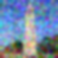
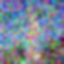

Gaussian Blur (Original)
Gaussian Denoised t=250

Gaussian Denoised t=500

Gaussian Denoised t=750
This project explores diffusion models for image generation and manipulation. Part A covers using pretrained diffusion models for various tasks including denoising, sampling, and image editing. Part B involves training our own diffusion models from scratch on MNIST digits.
I was having trouble so I decided to use the prompts already generated. I generated the following images using different prompts:
I used the same random seed of 723 for all parts. The drawing of a man with a hat seems to look the best. It may be because it is asking for something that looks like a photo instead of asking for a lithograph which usually is not as realistic or full of details.
We implemented a forward function to add noise to an image based on the timestep. Here are the outputs for the campanile at noise levels 250, 500, and 750 (out of 1000). The original campanile image is also shown:
We can see that as the noise level increases, the image becomes more and more noisy.
We show the Gaussian denoised versions of the above photos. Here are the outputs for the campanile at noise levels 0, 250, 500, and 750:
We added some noise and used a 1-step denoising model using a UNet to try and denoise the image. The results are as follows:
We can see that the denoised campanile is fairly close, with the lower noise levels being the closest.
We created strided timesteps starting at 990 with a stride of 30, eventually reaching 0. The campanile at every 5th loop of denoising looks like this:
We used the iterative denoising model to create 5 sampled images by denoising iteratively from Gaussian noise:
We implemented the iterative_denoise_cfg function to denoise images using the conditional prompt "a high quality photo" with a CFG scale of 7 against the null prompt. The results are as follows:
I tried using image-to-image translation to edit images using the prompt "a high quality photo" with a CFG scale of 7. The results are shown at noise levels [1, 3, 5, 7, 10, 20]:


I also tried editing some hand drawn and web images with the same prompt "a high quality photo":

I implemented the inpainting function and tried inpainting images with custom masks:
The mask is the box in the top middle of the image. It is most apparent in the campanile image because it fits the shape of the campanile and thus seems to have more room to change whereas the other images could not change as much due to have to match the surroundings
I used image translation to transform images with the prompt "a photo of a rocket ship":

We created visual anagrams where we can see two different images when we flip it upside down:
When you flip these images upside down, you can see a completely different image! The first shows a man right-side up and a campfire when flipped. The second shows a skull right-side up and a snowy village when flipped.
Finally, we created hybrid images that show different content when viewed from close up vs far away:
The second hybrid looks like a man up close, but the way that the torso is shaped/missing along with the beard looking like teeth makes it look like a skull from far away.
In this section we explore how to use a UNet to denoise MNIST images instead of general images from the diffusion model. We first show how noise is added by visualizing the digit 2 at different noise levels:

We trained the UNet on MNIST with sigma = 0.5. The training loss curve is as follows:

As a comparison of how the UNet performs at different points during training, we show the results after the 1st and 5th epochs on a few examples:


We can see that the UNet performs better after the 5th epoch than the first epoch. This is because the UNet is not able to denoise the image as well after the 1st epoch and still has some extra white traces.
We also tried to denoise images out of distribution by testing various values of sigma from 0 to 1. The results for 3 examples are as follows:

We can see that the UNet has a higher loss but the training loss seems to be relatively stable.
We tried to denoise pure noise by training the UNet on pure noise. The training loss curve is as follows:

The results for pure noise after the 1st and 5th epochs are as follows:


We see that epoch 5 is a bit less blurry but all of the outputs look the same for a given epoch. I think that because the input does not provide any information at all, the UNet learned to just not use the input and output a constant image that is the closest to the average of the training data (it looks like all of the digits where it is more light when there are more digits going through it).
We first show the training loss curve for the time-conditioned UNet:

We trained a time-conditioned UNet to help provide extra context for the denoising process. By having this extra time parameter, it gives the UNet more information about how much noise there is and thus helps it decode. Here are the results after training for 1, 5, and 10 epochs:


We can see that the time-conditioned UNet struggles to generate digits even after 10 epochs where it has stabilized in training loss. I think this may be due to not knowing which digit to generate since the UNet will likely just generate a "random" looking digit. Note that it is better than the pure noise model as the time parameter provides some context and so it looks less noisy.
We now give the model even more context: we tell the UNet the class of the image (what digit it is) and see how it affects performance as well as sampling. If this works, it would let us generate chosen digits from the UNet instead of random digits.
We first show the training loss curve for the class-conditioned UNet:

We can see that the loss decreases over time, indicating that it does better on the training data.
We show the sampling results for the class-conditioned UNet, generating 4 instances of each digit:


We can see that the class-conditioned UNet is able to generate the digits much earlier into the training than the time-conditioned UNet. It seems that this extra piece of information is enough to help the UNet converge faster.